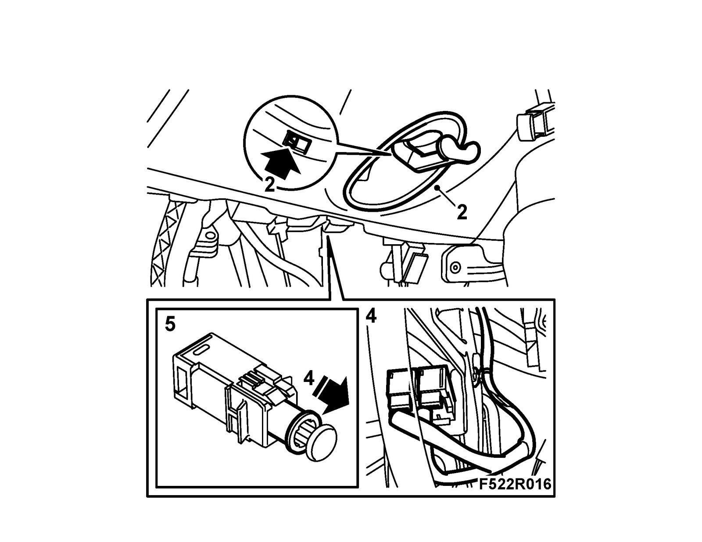
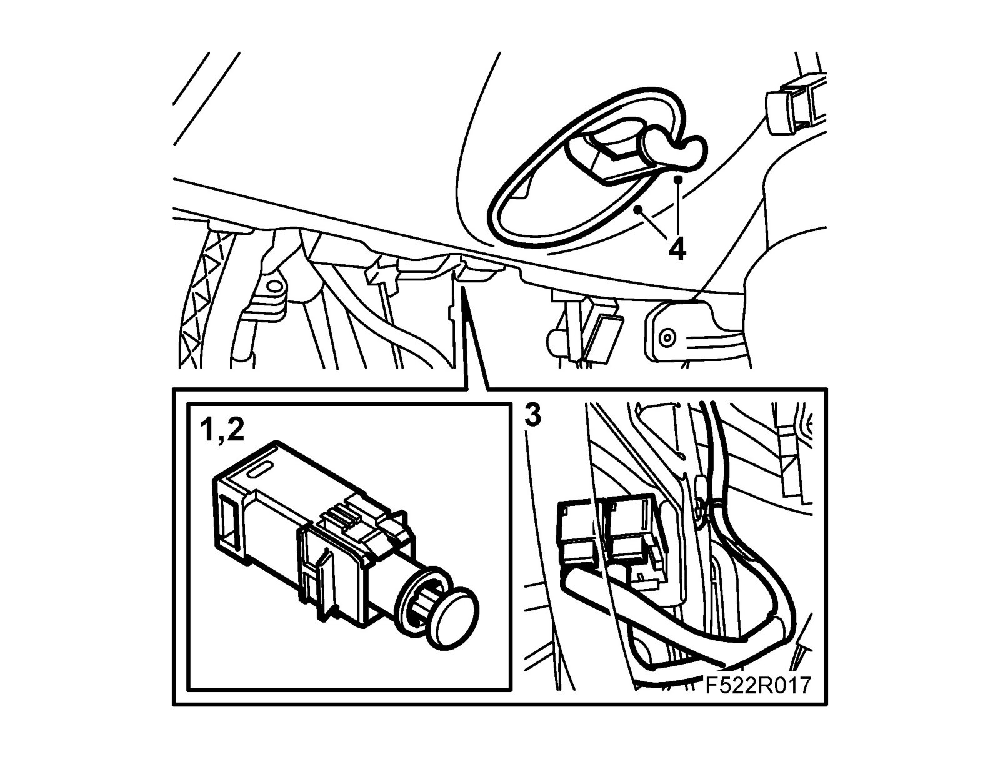

Brake Pedal Switches
Brake pedal switchesTo remove
1. Remove the sound baffle on the driver's side.
2. Remove the handle and cover for steering wheel adjustment.

3. Press down the brake pedal as far as possible. There must be a vacuum in the brake servo (it may be necessary to start the engine).
4. Remove the switch pushrod and locking sleeve. Push in the lock tongue and remove the switch.
5. Remove the connector.
To fit
1. Remove the switch pushrod and locking sleeve.

2. Plug in the connector.
3. Press down the brake pedal as far as possible. There must be a vacuum in the brake servo (it may be necessary to start the engine).
Fit the switch. Press in the locking sleeve.
Note
The switch should fit in the bracket coding.
4. Fit the handle and cover for steering wheel adjustment.
5. Depress the brake pedal as much as possible and pull out the switch pushrod.
Release the pedal.
6. Fit the sound baffle on the driver's side.